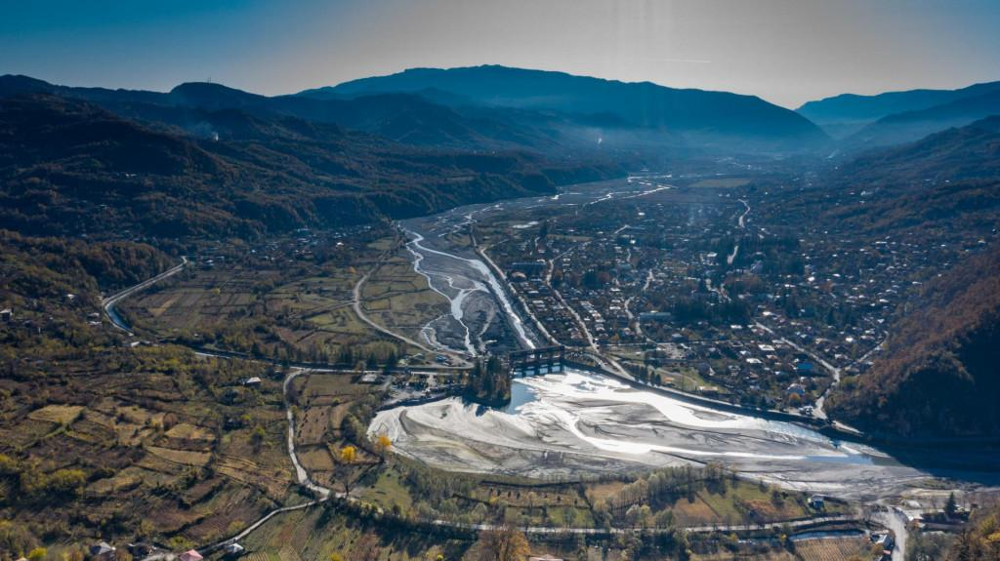

გეოგრაფია
მდებარეობს მდინარე ცხენისწყლის ნაპირას, ზღვის დონიდან 475 მ სიმაღლეზე, თბილისიდან 318 კმ, ქუთაისიდან 70 კმ. ცაგერში ნოტიო ჰავაა, იცის ზომიერად ცივი ზამთარი და შედარებით მშრალი ცხელი ზაფხული. საშუალო წლიური ტემპერატურაა 11,4 °C, იანვრისა 0 °C, აგვისტოს 22 °C. აბსოლუტური მინიმუმი -26 °C, აბსოლუტური მაქსიმუმი 41 °C. ნალექები 1235 მმ წელიწადში.


მერია
რუსთაველის ქუჩა N 58
(+995) 599 18 24 25
tsagerimeria@gmail.com
საკრებულო
რუსთაველის ქუჩა N 69
(+995) 551 17 97 41
tsagerisakrebulo@gmail.com